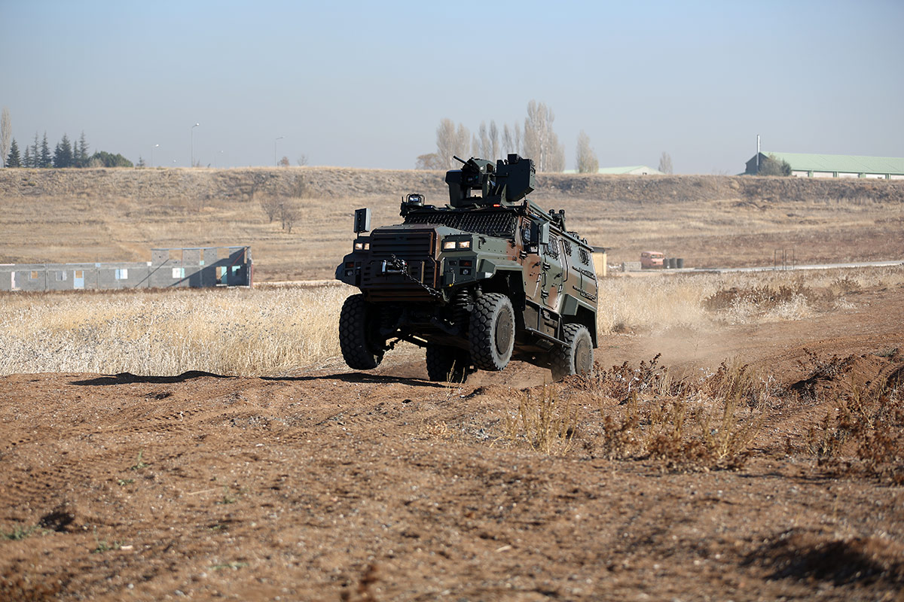
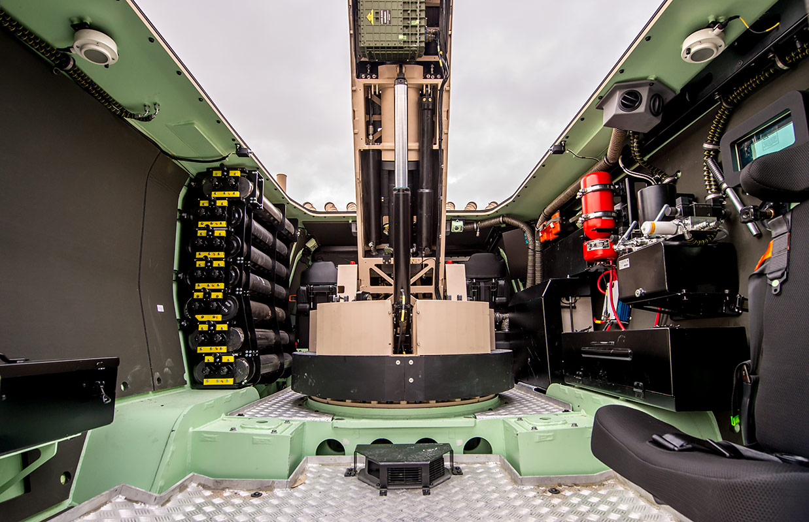
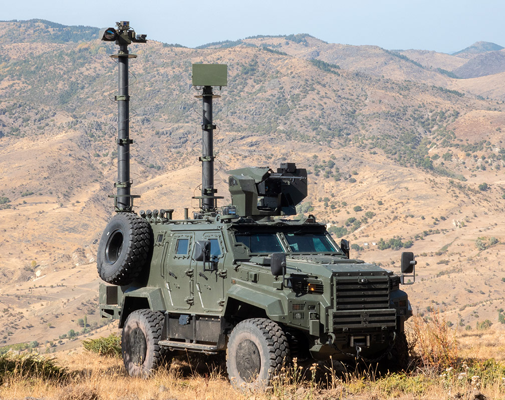

❮
❯
EJDER YALÇIN, Nurol Makina tarafından geliştirilen 4x4 taktik tekerlekli zırhlı araçtır. Araç; kırsal ve kentsel bölgelerde askeri birlikler ile güvenlik güçlerinin operasyonel ihtiyaçlarını karşılamak amacıyla geliştirilmiştir.
Platform, yüksek koruma ve hareket kabiliyetini bir araya getiren modüler bir yapıya sahiptir. Farklı görev yüklerinin entegre edilebilmesi sayesinde komuta-kontrol, tanksavar, hava savunma, mayın/EYP tespit-imha, ambulans, personel taşıyıcı, sınır güvenliği, keşif-gözetleme, zırhlı muharebe, havan, radar ve jammer gibi çok sayıda varyantta kullanılabilmektedir.
Ergonomik iç yerleşim, kolay iniş-biniş, gövde içine entegre haberleşme altyapısı, gece-gündüz görüş sistemleri ve yüksek koruma seviyesi ile EJDER YALÇIN modern taktik görevler için çok yönlü bir platform olarak öne çıkmaktadır.


